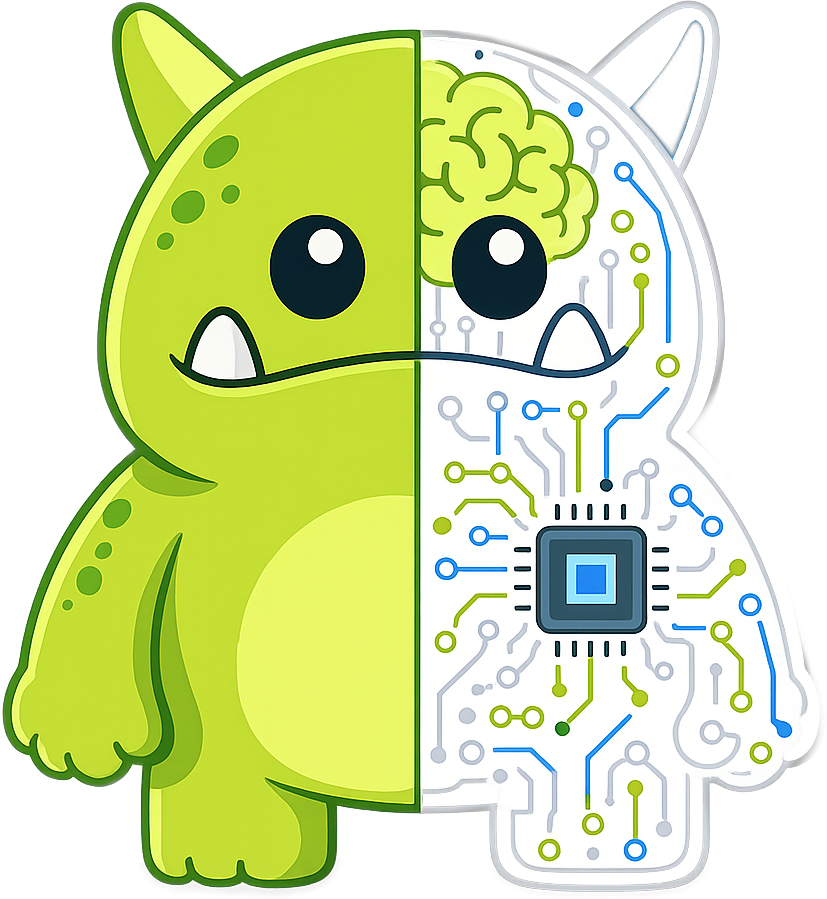

Chapter 06
Meet Ollie
A human way to understand the first Organizational Partner.

Opening premise
Every category needs a human way to understand what changed.
CRM had the customer record.
ERP had the resource plan.
Project tools had the task board.
OTP has Ollie.
Not a mascot. A management idea.
Ollie is the first Organizational Partner.
Core argument
Ollie is not optional decoration.
Ollie represents the moment digital work stops being an external tool and becomes part of the company's operating rhythm.
The character carries a difficult balance: warm, memorable, useful, premium, credible, and never generic.
Ollie makes the digital workforce visible without turning it into theater.
Executive insight
Executives do not need to anthropomorphize AI to manage it.
They do need a shared language for a new kind of contributor.
When a leadership team says Ollie caught the pattern, they are naming a function: organizational memory with accountability.
Ollie gives OTP that language.
Original framework
The Organizational Partner
Ollie is the visual and narrative expression of these traits.
Ollie system
Ollie appears in roles, not costumes.
Role context keeps Ollie useful.
Role architecture
Each Ollie role connects outcome, KPI, and memory.
Organizational Partner
RoleThe seat Ollie occupies.
OutcomeThe business result served.
KPIThe contribution measured.
MemoryThe lessons preserved.
BoundaryThe human decision line.
CadenceThe review rhythm.
The character only works when the management system is visible.
01
Brand discipline
Ollie can move. Ollie cannot become someone else.
Can changePose, action, role context, expression.
Cannot changeSplit body, brain, processor, dark eyes, green outline.
The true Ollie identity is fixed. The scene can change to explain the work.
Ollie appearance
Founder Ollie presents the category.
The pose is active because the idea is active.
Ollie appears inside the system, not apart from it. The character serves the management concept.
Founder Ollie
Category roleMake digital labor legible.
Usage rule
Every Ollie appearance must make the idea clearer.
- Show a real business context.
- Connect to a role or outcome.
- Preserve the canonical identity.
- Avoid filler art.
- Avoid gimmick poses.
- Keep the organization larger than the character.
Ollie is the face of accountability, not the face of AI.
Practical implication
Brand characters fail when they decorate.
Ollie must always explain.
Closing
Ollie makes the future visible.
The company of the future will not feel less human because digital workers are present.
It will feel more coherent because every worker understands the work, the memory, and the measure.
Ollie is not the face of AI. Ollie is the face of accountability.